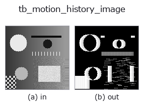

typed op• Datenarten: video → video
• Aufruf: fullseye.apply(img, "tb_motion_history_image", a=0.5, b=0.5) (das 2-D-Modell ist ein Bild plus zwei skalare Regler a,b∈[0,1])

*Die Abbildung ist die tatsächliche Ausgabe auf einer synthetischen 128×128-Eingabe. Links Eingabe, rechts Ausgabe. Punktwolken als Draufsicht-Streudiagramm (Helligkeit = z), 1-D-Reihen als Linie, Volumen als Maximum-Projektion entlang z, Videos als mittleres Bild, komplexe Bilder als Betrag; Rückgabewerte, die kein Bild ergeben, werden als Werte gezeigt.*
Regler a durchfahren (0,1 / 0,5 / 0,9, der andere Regler auf Standard):
▸ tb_motion_history_image: knob a sweep (docs site)
Regler b durchfahren (0,1 / 0,5 / 0,9, der andere Regler auf Standard):
▸ tb_motion_history_image: knob b sweep (docs site)
Stufen (die vorangehenden Ops → dieser Op, von links nach rechts):
▸ tb_motion_history_image: stages (docs site)
Auf anderen Bildern (synthetische Szene / Foto / Münzen. Obere Reihe: Eingaben, untere Reihe: deren Ausgaben. Regler auf Standard):
▸ tb_motion_history_image: other inputs (docs site)
Bewegung (GIF: Bilder / Ansichten / Schnitte nacheinander. Die stehende Abbildung ist die vollständige; das GIF ist ergänzend):
Bobick-Davis-Motion-History-Image pro Frame → `(T, H, W) im Bereich [0, 1] (video`).
> Die ausführliche Beschreibung unten ist der Originaltext — Zusammenfassung und Überschriften sind übersetzt.
Frame `t is the MHI of frames 0..t`: 1 where motion is happening,
decaying by `1/tau` per frame elsewhere. The last frame is the classic
single-image temporal template of the whole clip's motion.
Typed bridge of the videostream op `motion_history_image into the 2-D evolution registry: the same implementation, called under the op(v, a, b) convention. a drives tau (default 15) and b drives threshold` (default 0.1).
• Katalog der Beispieldaten (Download-URLs / Lizenzen) — 2-D nutzt skimage.data (BSD/Public Domain) plus synthetische Bilder, 3-D nennt Download-URLs echter Datenquellen (Stanford, PDS, …).
• Herkunft und Literatur der Operatoren — die Quellen der Forschung/Verfahren, auf denen diese Operatorfamilie beruht.
Das Programm unten ist nachweislich lauffähig (gleiche Eingabe wie die Abbildung). In der Studio-Hilfe wird dieser Block zu Schaltflächen, die es sofort laden und ausführen.
img_to_video 0.50 0.50 tb_motion_history_image 0.50 0.50
▸ Load this pipeline · Load & run
Die folgenden Beispiele rufen den zugrunde liegenden Ledger-Op motion_history_image auf. Dieser Brücken-Op ist dieselbe Implementierung, angepasst an die Konvention fn(v, a, b); das Verhalten gilt unverändert (nur die Aufrufform unterscheidet sich).
• video_streaming — py -3.11 examples/video_streaming.py
video als Eingabe)identity · tb_temporal_bandpass · tb_temporal_band_power · tb_temporal_median_window · tb_moving_average_window · tb_background_subtraction_window · tb_frame_difference_causal · tb_exponential_background
typed)tb_points_to_voxel · tb_estimate_point_normals · tb_iss_keypoints · tb_angle_3points · tb_project_points · tb_render_point_depth · tb_statistical_outlier_removal · tb_radius_outlier_removal
*Provenance: ops.py — 2D Operator-Registry. Diese Notiz wird von tools/opdocs.py md erzeugt (nicht von Hand bearbeiten).*
© 2026 Kazufumi Furuse — Fullseye operator documentation. Licensed under Apache-2.0.
{kind=link}
{kind=link}
{kind=link}
{kind=link}